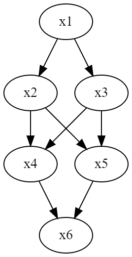

機械学習とは #
機械学習とは、いい感じに予測する学習器を作ること。代表的なタスクは以下の通り。
回帰 #
いい感じのデータ点を当てはめる式を作る。線形回帰ならば$y_n = \mathbf{w} ^ \mathbf{x}_n + \epsilon_n$ (1.1)。$\epsilon_n$はノイズで、ある分布に従う。
線形回帰のうち、$\mathbf{x}_n = (1, x_n, x_n^2, \cdots ) ^ T $のものを多項式回帰という。
回帰のグラフィカルモデル #
回帰の同時分布$p(\mathbf{y}, \mathbf{w}, \mathbf{X})$は以下のように考えられる。 すべての$y_i$は独立なので、$\mathbf{y}$の場合はそれらの総乗に。また、明らかに$\mathbf{y}$がないとき、$\mathbf{X}$と$\mathbf{w}$はお互いに独立なので、$p(\mathbf{w}, \mathbf{X}) = p(\mathbf{w}) p(\mathbf{X})$が成り立つ。
$$ p(\mathbf{y}, \mathbf{w}, \mathbf{X}) = p(\mathbf{w}) \prod _{i = 1}^{N} p(y_n | \mathbf{w}, \mathbf{x}_i) p(\mathbf{x}_i) $$
したがって、回帰のグラフィカルモデルは(x_n) -> y_n <- (w)である。
また、$\mathbf{w}$についての事後分布、$p(\mathbf{w} | \mathbf{X}, \mathbf{y})$は$\mathbf{w}$の変数以外は定数とみなせば、
$$ p(\mathbf{w} | \mathbf{X}, \mathbf{y}) \propto p(\mathbf{w}) \prod _{i = 1}^{N} p(y_n | \mathbf{w}, \mathbf{x}_i) $$
この式になる。この事後分布を計算することを学習と指す。 実際の計算では、右辺を計算したのち、これが$p(\mathbf{w} | \mathbf{X}, \mathbf{y})$であると意味を持てるように、$\mathbf{w}$で積分したら1になるような比例定数を乗じることになる。
予測分布 #
$p(\mathbf{w} | \mathbf{X}, \mathbf{y})$を計算することが、非ベイズ統計での$\mathbf{w}$を直接求めることに当たる。$\mathbf{w}$も不確定だから分布で表す感じ。
この$p(\mathbf{w} | \mathbf{X}, \mathbf{y})$を用いることで、新たな入力値$\mathbf{x}_l$に対する出力の予測$y_l$の分布を計算できる(というかこれが学習の目的)。$\mathbf{w}$の同時確率まで拡張して式変形してみると以下のようになる。
$$ p(y_l | \mathbf{x}_l, \mathbf{X}, \mathbf{y}) = \int p(y_l | \mathbf{x}_l, \mathbf{w}, \mathbf{X}, \mathbf{y}) d \mathbf{w} = \int p(y_l | \mathbf{x}_l, \mathbf{w}) p(\mathbf{w} | \mathbf{Y}, \mathbf{X}) d \mathbf{w} $$
識別的モデル #
この回帰と次の分類は、データ$\mathbf{x}$にたいする予測$y$についての尤もらしさに着目している。つまり、$p(y | \mathbf{x})$に着目。
分類 #
二値分類など。連続値から離散値にする。よく使われるのは、
$$ \mathrm{Sig}(x) = \frac{1}{1 + e^{-x}} $$
これを使うことで、$(-\infty, +\infty)$を$(0, 1)$に変換できる。これが確率らしきものなので、確率と考えてもいい。
これを多クラス分類に拡張すると、ソフトマックス関数を使えばいい。 入力は$\mathbf{a} = (a_1, a_2, \cdots, a_K) ^ T$という$K$次元のベクトルで、それぞれが各クラスを代表する値。クラス$k$である確率は
$$ \mathrm{SM}_k(\mathbf{a}) = \frac{e^{- a_k}}{\sum _{i = 1}^{K} e^ {- a_i}} $$
こうすることで、$\sum _{i = 1} ^ K \mathrm{SM}_i (\mathbf{a}) = 1$を満たす確率らしきものに変換できる。
クラスタリング #
与えられたデータの近くのグループをまとめる感じ。
クラスタリングのグラフィカルモデル #
観測データ$\mathbf{X}$と、それらに対するクラスの割り当て$\mathbf{S} = (\mathbf{s}_1, \cdots, \mathbf{s}_N)$($\mathbf{s}_i$はそれぞれone-hotベクトルと想定)があるとする。各クラスターごとのパラメタを$\mathbf{\Theta} = (\mathbf{\theta}_1, \cdots, \mathbf{\theta}_N)$とする。 この時、$p(\mathbf{X}, \mathbf{S}, \mathbf{\Theta})$は、
$$ p(\mathbf{X}, \mathbf{S}, \mathbf{\Theta}) = p(\mathbf{\Theta}) p(\mathbf{X} | \mathbf{S}, \mathbf{\Theta}) p(\mathbf{S}) = p(\mathbf{\Theta}) \prod_{i = 1}^{N} p(\mathbf{x}_i | \mathbf{s}_i, \mathbf{\Theta}) p(\mathbf{s}_i) $$
これが対応するグラフィカルモデルは(x) -> (y) <- (W)。
ある事前分布$p(\mathbf{\Theta})$に従って$\mathbf{\Theta}$を決めて、そこから各データの$\mathbf{x}_n$の所属$\mathbf{s}_n$を元に、$p(\mathbf{x}_n | \mathbf{s}_n, \mathbf{\Theta})$で各データが生成されるという前提を取っている。
ここで、$\mathbf{s}_n$は分類したカテゴリを示すが、$\mathbf{x}_n$を生成する時にこれは未観測の変数であると考えられる=隠れ変数。
次元削減 #
$D \times N$の行列$\mathbf{Y}$を、$M \times D$の行列$\mathbf{W}$と$M \times N$の行列$\mathbf{X}$で近似する分解手法。
$$ \mathbf{Y} \approx \mathbf{W} ^ T \mathbf{X} $$
ここで、$D, N » M$となると、本来$O(DN)$必要なメモリが$O(M(D + N))$に圧縮できる。完全な復元は無理であるが、近似できればいいと考えれば有効な削減方法。
次元削減のグラフィカルモデル #
基本的に回帰と同じ。
$$ p(\mathbf{Y}, \mathbf{X}, \mathbf{W}) = p(\mathbf{Y} | \mathbf{X}, \mathbf{W}) p(\mathbf{X}) p(\mathbf{W}) = p(\mathbf{W}) \prod _{i = 1} ^ {N} p(\mathbf{y}_i | \mathbf{x}_i, \mathbf{W}) p(\mathbf{x}_i) $$
グラフィカルモデルは(X) -> (Y) <- W。
この式から、$p(\mathbf{W} | \mathbf{Y})$と$p(\mathbf{X} | \mathbf{X})$を計算したりする。
生成モデル #
先ほどのクラスタリングもそうだが、これらは全ての観測データ$\mathbf{X}$の背後にある生成仮定を記述している＝生成モデル。 全ての変数に関しての同時分布を作ってる。
回帰や分類における$p(y | \mathbf{x})$だけ求めればいいのと違い、同時分布も考えるので$p(\mathbf{x})$まで求められるようになる。次式のように
$$ p(y | \mathbf{x}) = \frac{p(y) p(y | \mathbf{x})}{p(\mathbf{x})} $$
機械学習のアプローチ #
ツールボックス #
既知の機械学習の手法について、何かしらの基準に従って性能が良い手法を選んで識別器を作るという考え。教師データでラベル付きのものを使うので、教師アリ学習となる。
複雑な数学の知識無くても使えるが、本当に上手くfitする手法があるとは限らない。
モデリング #
データに関するモデルがあると仮定して、事前にそれを構築する。そのパラメタを学習データから訓練する。数学バリバリ使う。
柔軟性は高いが訓練は大変で数学も大変。
独立と条件付確率 #
$y_1, y_2$が独立なら、同じ前提条件の下(条件なしでも、条件が何でも)、必ずこれが成り立つ。
$$ p(y_1 | x) p(y_2 | x) = p(y_1, y_2 | x) $$
ベイズの定理 #
$$ p(x | y) = \frac{p(y | x) p(x)}{p(y)} = \frac{p(y | x) p(x)}{\int p(x, y) dx} $$
事前分布、事後分布 #
事前分布は、条件$x$の分布→$p(x)$
事後分布とは、結果$y$がわかっているときの、前提条件$x$の分布→$p(x | y)$。
事後で情報がわかることによって、この2つは全然違う分布によくなったりする。
逐次推論 #
毎回の観測が独立であるとする。
$y_1$が得られた時の$x$の事後分布$p(x | y_1)$は、ベイズの定理によって、$p(y_1)$を定数と考えると、$p(y_1 | x) p(x)$に比例する。
ここで、新たに観測した$y_2$が得られたとして、$p(x | y_1)$から、アップデートした事後分布の$p(x | y_1, y_2)$を得たい。
$$ p(x | y_1, y_2) \propto p(x, y_1, y_2) = p(y_1 | x) p(y_2 | x) p(x) \propto p(y_2 | x) p(x | y_1) $$
毎回の観測が独立なので、$p(x, y_1, y_2) = p(x, y_1) p(x, y_2) = p(y_1 | x) p(y_2 | x) p(x)$が成り立つ。
このように、既知の事後分布$p(y_1 | x)$から分布のアップデートできる。これは追加学習、逐次学習、オンライン学習という。
これを一般化する。観測データが$N$個でそれぞれ独立ならば、$\mathbf{y} = (y_1, \cdots, y_N)$だとすると、同時分布は
$$ p(x ,\mathbf{y}) = p(x) \Pi _{i = 1}^{N} p(y_i | x) $$
によって、
$$ p(x | \mathbf{y}) \propto p(x , \mathbf{y}) = p(x) \Pi_ {i = 1}^{N} p(y_i | x) = p(y_N | x) p(x | y_1, \cdots, y_{N - 1}) $$
となる。
グラフィカルモデル #
DAGを用いて表現。$p(x, y) = p(y | x) p(x)$という関係性だとする。つまり、xについての事前分布と、yを知った後のxの事後分布である。
この時、グラフに$x \to y$という辺を加える。
もっとの複雑な例として、
$$ p(x_1, x_2, x_3, x_4, x_5, x_6) = p(x_1) p(x_2 | x_1) p(x_3 | x_1) p(x_4 | x_2, x_3) p(x_5 | x_2, x_3) p(x_6 | x_4, x_5) $$
同様に、p(終点, 始点)のルールでグラフを描くと

このようにDAGにすることで独立なものを簡単に判別できる。この例は全て$x_1$から来ているので独立はないが。
head to tail型 #
$$ p(x, y, z) = p(x)p(y | x)p(z | y) $$

普通の条件付確率のこの連鎖のような展開は、グラフィカルモデルでは一本のパスとなる。
更に式変形してみる。
$$ p(x, z | y) = \frac{p(x, y, z)}{p(y)} = \frac{p(x) p(y|x) p(z|y)}{p(y)} = p(x | y) p(z | y) $$
これが意味するのは、$y$という条件の下で、$x, z$が独立=条件付独立。 グラフに換算すると、一本のパスの上で、任意の距離2の2点$a, b$があって、間に挟んでいるもの$c$があるなら$c$という条件下では、$a, b$は条件付独立。
tail to tail型 #
$$ p(x, y, z) = p(y)p(x | y) p(z | y) $$
このような依存関係の時、満たすべき条件は明らかに$y$という前提で条件付独立である。
面白いことに、前のhead to tail型とは構成が違う中、いずれも$y$という前提条件があるなら$x, z$が独立している。 どっちのグラフとしても、$y$を取り除けば$x, z$には関係がないということからどっちも同じとわかるだろう。
head to head型 #
$p(x, y, z) = p(y | x, z) p(x) p(z)$

明らかに、これはグラフで見ても$y$が有ろうがなかろうが$x, z$は独立している。
逆に、$p(x, z | y)$という$y$を観測した前提においては、
$$ p(x, z | y) = \frac{p(x, y, z)}{p(y)} = \frac{p(x) p(z) p(y | x, z)}{p(y)} $$
ここまでしか変形できずに、独立ではないとわかる。つまり、本来$x, z$は独立だが、$y$という条件を付けてしまうとお互いに関係が生じて独立じゃなくなるということである。
マルコフブランケット #

$x$について着目し、その確率を求めたいとする。
$a \to x$なので、$a$の向こうがどんな形で繋がろうが、head to tailかtail to tailなので、$a$に対して、$x$とその向こうはお互いに独立である。つまり、確率計算では$a$だけ見ればよい。
$x \to e, c \to e$のような形では、head to headになるので、$e$という条件では$c$と$x$が関係を持つ。
逆に言えば、上のグラフより外の依存関係は不要である。この周辺をマルコフブランケットという。つまり、$x$の親、子とその親である。
ベイズ学習のアプローチ #
- モデルの構築。観測データの$\mathbf{d}$と、観測されてない変数$\mathbf{x}$に関して、同時分布$p(\mathbf{d}, \mathbf{x})$を構築する。
- よさげな分布(ガウス分布、各種離散分布とかを天下り的にこれだ！と思って決めておく)
- 事後分布$p(\mathbf{x} | \mathbf{d}) = \frac{p(\mathbf{x}, \mathbf{d})}{p(\mathbf{d})}$を解析的または近似的に得る。
- $p(\mathbf{d})$はモデルの中で観測データが出現する確率であり、周辺尤度という。これもあらかじめ計算しておく。
- 結果として、$p(\mathbf{x} | \mathbf{d})$が求められる。
ガウス分布、β分布等には再生性があり、$p(\mathbf{x} | \mathbf{d})$も同様なタイプの分布になるが、一般的にはそもそも$p(\mathbf{x} | \mathbf{d})$はキレイな分布にならない、解析的に計算できない場合も多い。
解決策の1つとして、サンプリングがある。もう1つは厳密な$p(\mathbf{x} | \mathbf{C})$は計算できないなら、似てるような形が簡単な式を代わりに使うというもの。
不確実性に基づく意思決定 #
確率推論はあくまで確率だけを出している。それを元に意思決定するのはまた別の仕事(確率的に大差ないなら意思決定して本当にいいの？？？)
ベイズ学習のメリットとデメリット #
メリット
- 一貫して事後分布の推論問題に帰着できる。
- 不確かさを含んだ推論ができる。
- 利用可能な知識を取り入れやすい。
- 過学習しづらい。
欠点
- 数理的な知識を結構要求する。
- 計算コストが高い。